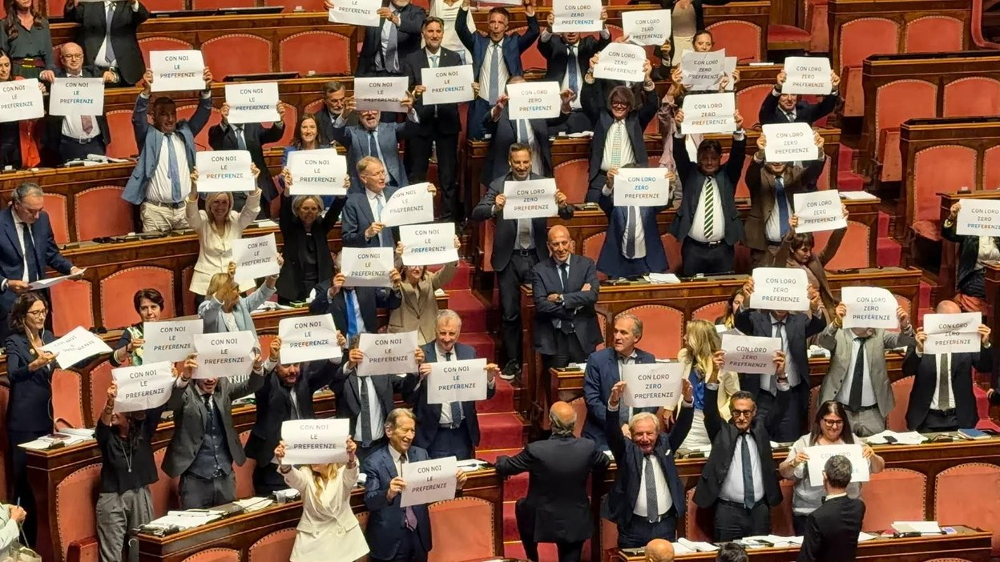

VIIIe commission permanente (lien externe, s’ouvre dans une nouvelle fenêtre)
Environnement, transition écologique, énergie, travaux publics, communications, innovation technologique. Il dirige le groupe de Fratelli d'Italia.
Activité
Commissions, fonctions, propositions de loi et présence en séance dans la XIXe législature. Chaque fiche renvoie à la source officielle du Sénat.
Les chiffres du mandat
Quatre mesures lues automatiquement à partir de la fiche publique Openpolis, avec date et source. Le nombre de communiqués n’est pas un indicateur de résultat et figure à part.
Données lues automatiquement chaque semaine à partir de la fiche Openpolis du Sénateur ; en cas d’erreur de lecture, la dernière valeur valide reste publiée, avec sa date. 43 communiqués publiés dans les archives de ce site.
Commissions
Environnement, transition écologique, énergie, travaux publics, communications, innovation technologique. Il dirige le groupe de Fratelli d'Italia.
Commission parlementaire d'enquête sur le phénomène mafieux et sur les autres associations criminelles, y compris étrangères.
Organe bicaméral consacré aux relations entre l'État, les Régions et les collectivités locales.
Initiatives législatives
Les actes déposés portant sa première signature, avec l’état de la procédure tel qu’il ressort de la fiche officielle du Sénat.
Chronologie

Pourquoi c’est important: Le sénateur attribue à Fratelli d’Italia le retour des votes de préférence, qui selon lui rend aux citoyens un choix direct absent depuis trente-cinq ans.

Pourquoi c’est important: Si le Parlement adopte le projet de loi, les quatre tribunaux des Abruzzes ne dépendront plus de prorogations annuelles.
Tribunaux sous-provinciaux des Abruzzes

Pourquoi c’est important: Les quatre tribunaux sous-provinciaux des Abruzzes visent une sauvegarde structurelle, non une nouvelle prorogation.
Tribunaux sous-provinciaux des Abruzzes

Pourquoi c’est important: La baisse du coin fiscal vaut, selon le sénateur, 100 euros de plus par mois sur la fiche de paie.

Pourquoi c’est important: Les communes rivalisent sur l’environnement et la mobilité : un million d’euros pour le projet gagnant.
Sources : Sénat de la République, Openpolis. Synthèses non officielles : pour les textes intégraux, se reporter au site du Sénat.